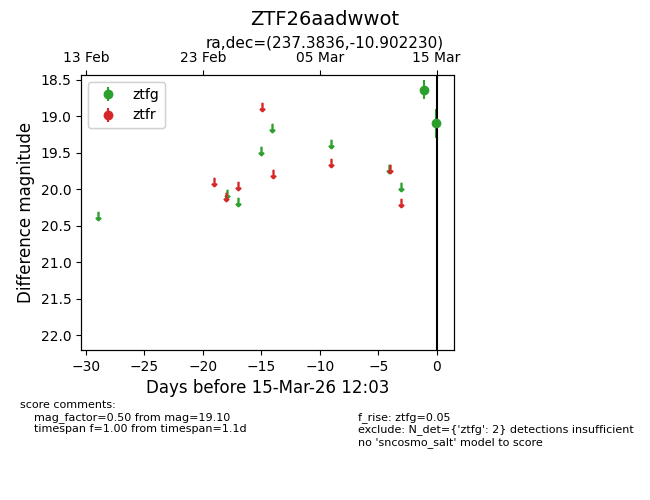
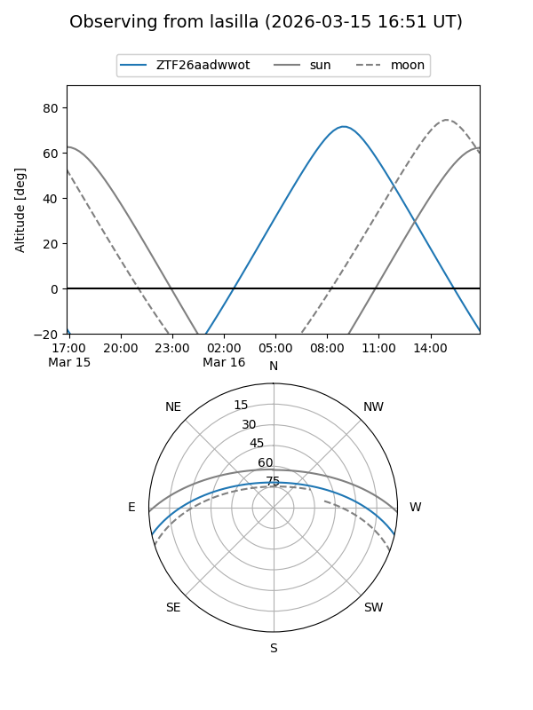
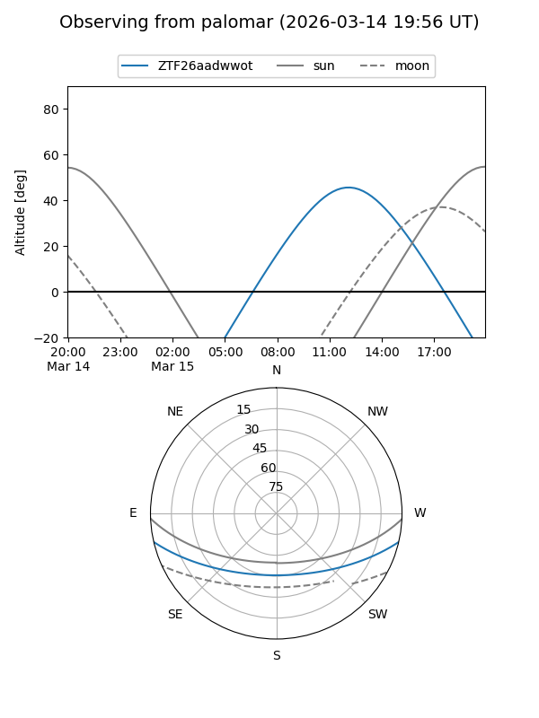

ZTF26aadwwot
Target ZTF26aadwwot at 2026-03-15 12:05
Aliases and brokers:
FINK: link
Lasair: link
ALeRCE: link
alt names
ZTF26aadwwot (ztf,fink_ztf)
Coordinates:
equatorial (ra, dec) = 237.3836,-10.90223
equatorial (HMS+DMS) = 15:49:32.07,-10:54:08.03
galactic (l, b) = (357.6302,+32.46791)
Flags:
Photometry:
last ztfg=19.10
2 ztfg detections
Lightcurve

Visibility


Additional plots